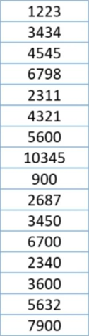
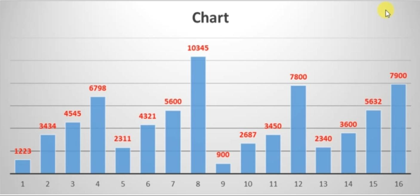
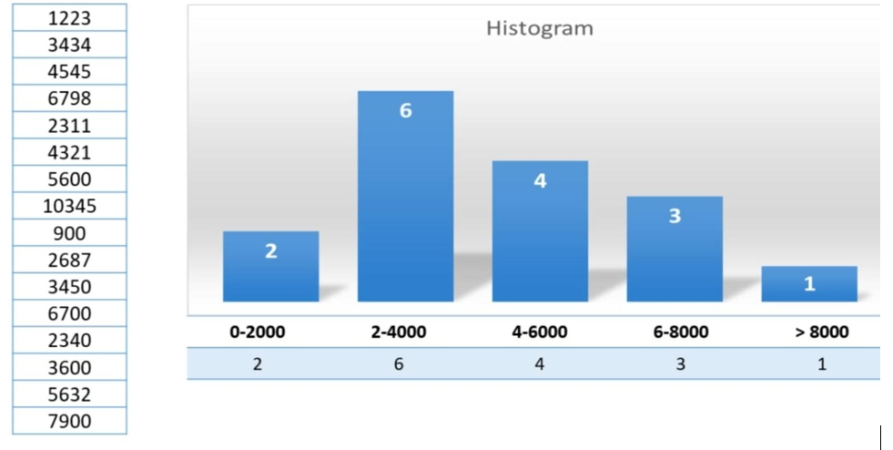
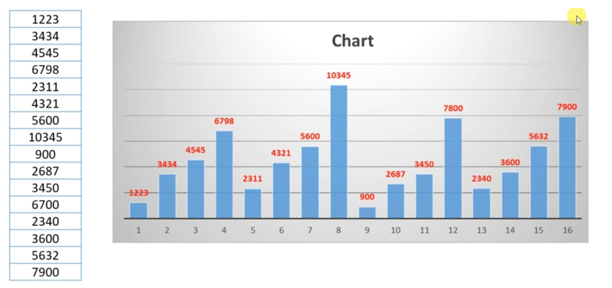
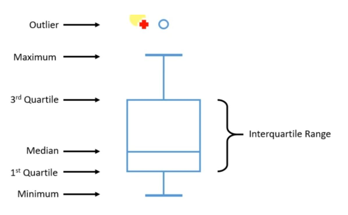
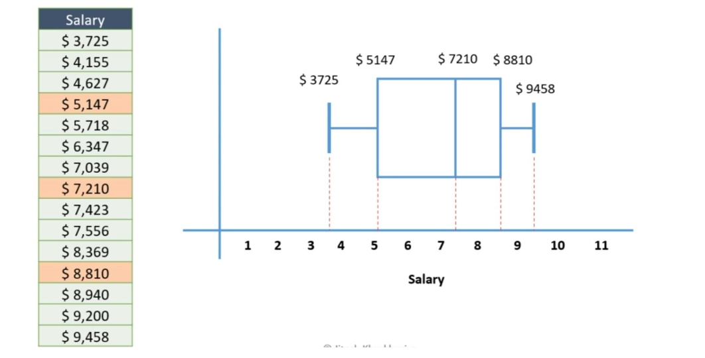
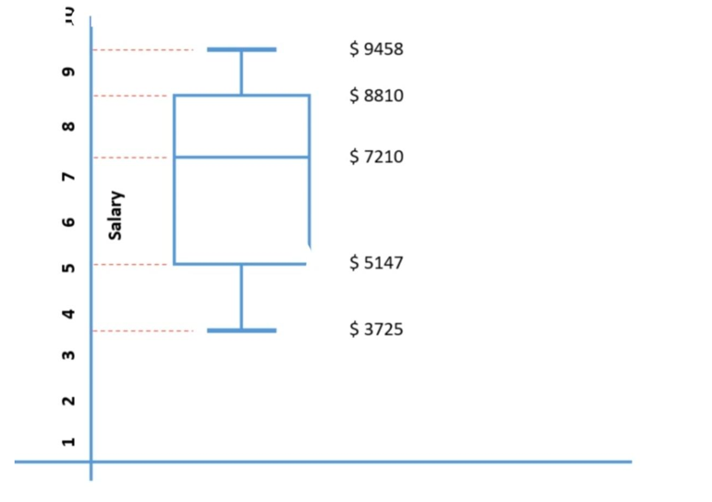

Why to visualise the data?
The human brain can identify an image in as little as 13 milliseconds and that s how fast we process the images.And no wonder that there is a phrase that a picture is worth thousand words.
Let's figure out following things for the given data,
- What's the maximum value?
- Does this data follow a trend?
- If there is a trend describe it ?
Let's plot the bar chart for following data-
And now it becomes so much easier to find out that 10345 is the maximum and 900 is
the minimum value in the following data set.
And we can also observe that it rises and fall after every
four observations.So when we plot the details many things become clear.
To visualise the numeric data , we have many techniques-
- Frequency Table
- Histogram
- Bar charts
- Bar charts
Frequency Table

In frequency table we simply create bins and buckets with various ranges . And then we start shooting these data points in these bins,so the first one 1223 goes in the first bin for being in this range , 3434 goes to the second bin,4545 goes to the third bin and so on . We simply keep on adding these data points to various bins and once we are done we do the count of all the data points in each of these bins. So the first one has 2 records ,second one has 6, third one has 4,fourth has 3 and the last one has only one record.And that's what we call as the frequency table,it simply notes down the frequency within a given bin.
Histogram
Histogram portrays the frequency table in a graphical form as visualisation.
All the values on the frequency table are now plotted as bars on histogram .
Bar Chart
It appears like histogram , however , in case of histogram, we have the frequency or the count on the vertical or Y axis there whereas in case of bar chart ,we applaud the actual value and the unit on the graph.
So we have all these records plotted according to their values and the size of bar only represents the higher or lower values.So the value of 10345 has the highest height and height of 900 is the smallest
Boxplot
Boxplot is nothing but the implementation of concept of IQR(Inter Quartile Range) for data visualization.
The edges of box represent the entire quartiles range with this line within the box representing the median.We have the first quartile at the bottom edge and third quartile at the top edge of the box.Then we also have the whiskers at the top and the bottom, and that's why this plot is also called as 'box and whisker plot'.Whiskers may have maximum and minimum values, and if we plot the actual maximum and minimum values we won't have this outlier. If we have 95 as the maximum value then all the values after 95 is considered as the outliers.
Let's try to plot it for the salary data that we have -
So in the dataset, we have the median as 7,210, and then our first quartile at 5,147 and then the third quartile is at 8,810.We have minimum at 3,725 and maximum at 9,458.And then we create a box and connect the whiskers, what we get is the boxplot of the data.
Boxplots are convinient and they take less space as compared to the histogram